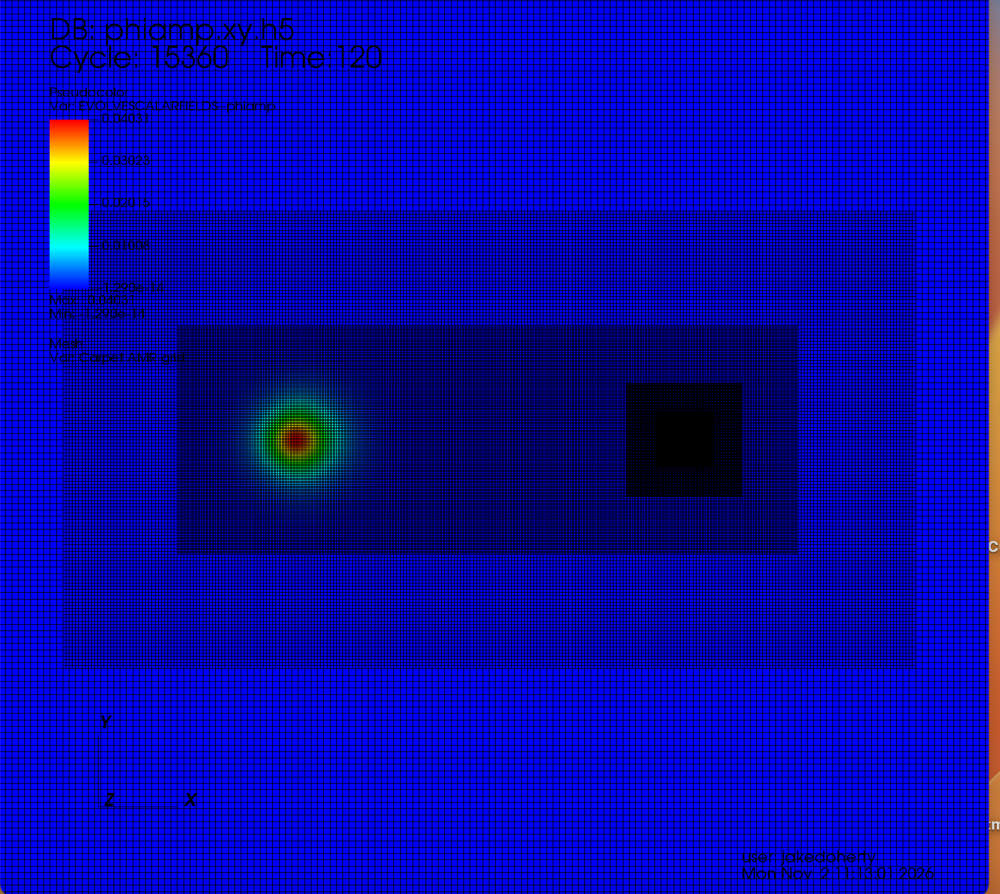

Research
The foundation of my work involves large scale numerical simulations of compact objects within the framework of general relativity. The calculations utilize adaptive mesh refinement to concentrate computational resolution where it is needed most, resolving fine structure near compact objects while following their evolution across a much larger domain.
These simulations require high-performance computing resources to handle their substantial computational and memory demands. Distributing the work across many processors makes it possible to study complex gravitational dynamics at the resolution and scale needed for accurate results.

Gravitational radiation from exotic compact binaries
Boson stars are hypothetical compact objects made of a self-gravitating scalar field. Their field structure allows rich dynamics, including oscillations, mergers, and collapse to black holes. Collisions involving these objects can produce gravitational waves that differ from those of binary black holes. Simulating these signals helps us investigate how gravitational-wave observations could distinguish exotic compact objects from black holes.
In “Head-on Collisions of Boson Stars with Bowen-York Type Initial Data,” we developed a method for constructing initial data for simulations involving boson stars, inspired by a standard approach for black hole binaries. We first tested the method on a single boson star carrying linear momentum. We then simulated head-on encounters between two boson stars and between a boson star and a black hole. For the configurations studied, boson-star pairs radiated more gravitational-wave energy than equivalent black-hole pairs, while mixed pairs radiated less. These results demonstrate the method’s usefulness and show how scalar matter can change the radiation produced by compact-object collisions.
Black hole dynamics in non-vacuum environments
Due to the highly nonlinear and coupled nature of Einstein’s equations, exact analytical solutions are relatively rare. Numerical relativity provides a powerful framework for investigating dynamical spacetimes for which no known analytical solutions exist. Beyond enabling the exploration of otherwise inaccessible physical phenomena, numerical simulations offer valuable insights into the underlying mathematical and physical structure of general relativity itself.
In “Growth of a Black Hole in a Scalar Field Cosmology,” we simulated a non-spinning black hole in an expanding universe driven by a scalar field with a quartic potential. We varied the potential strength and initial field configuration, tracked the apparent-horizon area to measure the black hole mass, and compared scalar-field evolution near the horizon and far from the hole using both coordinate and proper time. By comparing the measured mass growth with a formula derived from the dynamical horizon framework, we verified the predicted dependence on the square of the black hole mass and the square of the field’s time derivative. Some configurations produced roughly 15% growth in the black hole’s initial mass before the field reached the bottom of its potential. Surprisingly, the scalar field remained nearly homogeneous, with its behavior near the black hole closely resembling that in the distant cosmological background.